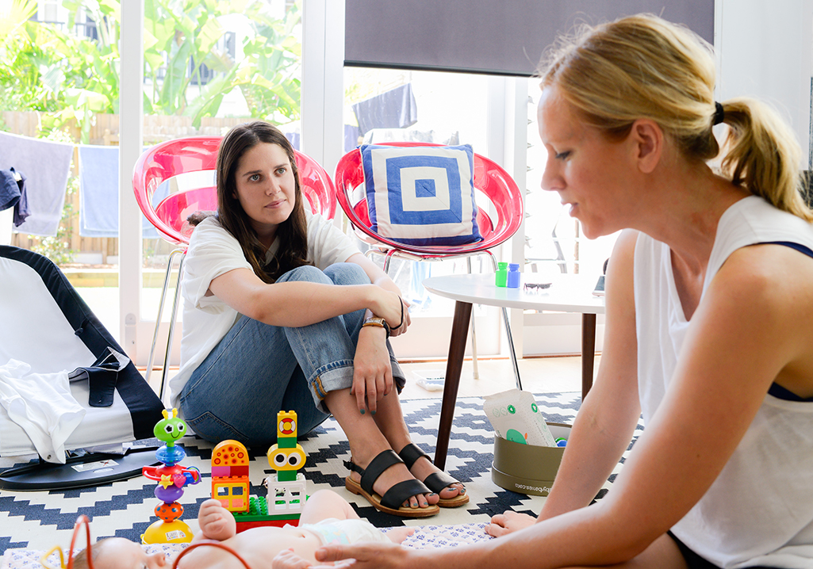

Bowerbirds - The Boweress
Alice Gruzman
26 June, 2016
You’ve recently renovated your terrace. Take us through the design process, sourcing and your overall inspiration for the aesthetic/feel of the place.
We accidentally bought this house (laughs) On the day of the auction we joked about how much it would sell for and decided to walk up and just have a look. Then we thought well let’s register and just see what happens…I opened the bidding because I thought well we’re not going to get this anyway and then someone else put a bid in and I thought oh what’s one more (laughs) and then it stopped! I remember sitting out the back on a rickety old bench sweating and we somehow negotiated and bought a house that day!
We started the process about 18 months ago with a local architect. From the very beginning we knew we wanted it to be clean, open, simple and most importantly liveable. We engaged a builder who has made me want to renovate again due to our experience being so awesome with him. We didn’t engage a designer as I pretty much knew what I wanted and had the time to research and source things myself. We went with European Oak for the floorboards which I absolutely love! There’s such a fine line between getting what you want and fitting it into your budget but we managed to pull it off. (laughs)
The beauty of having our architect was that she sorted all the finer details and asked us questions of how we lived…where did we hang our washing etc. to make the space as liveable as it can be within the design aesthetic we wished for. The skylights have made such a difference to the overall clean feel of the place too.
Sustainability is obviously a point of interest for you.
LED lights, skylights and having sensor lights in the bathroom and pantry for example are all ways of making the house feel sustainable. We are not using heat as much due to the natural sunlight we’re getting and the LED’s are much better for the environment whilst also being cost effective.
Last time we spoke you were working at The London…but you’ve also had something on the side for a while now. Tell us about 6 clean ingredients.
I think since I had children I realised that if I wanted my kids to eat a certain way I had to model it to them. So, that begun my ‘no crap’ policy! (laughs)
It initially started as a hobby but has now turned into something more. Basically, the idea is that if you’re busy like yourself and all my other mum friends you’re not going to have the time to be making something with a list of say 20 ingredients. It was to make it easy for people and that it can be nutrition with minimal ingredients. At the end of last year just because I wasn’t busy enough being pregnant, having two kids, managing a renovation and technically being a single mum (laughs) I studied and became a holistic health coach!
So basically, there are 4 pillars being your career, relationships, spirituality and physical activity. And the mindset is for e.g. if you’re really unhappy in your career it doesn’t matter how much kale you eat…(laughs) these things need to align. It’s really important to try and work on all these things to achieve a healthy life. These pillars will inevitable cross over.
So, what’s your spirituality?
Yoga is mine, and I have been doing a mums and bugs one where I can take this little one with me which is great! Reading is also a big one for me. Every night I read, predominantly fiction. A great way to turn off at the end of the day. A few books I’ve enjoyed in the last year are
The Gift of Rain & The Garden of evening mists – both by Tan Twan Eng.
All the light that cannot be seen by Anthony Doerr
The Goldfinch by Donna Tartt
Burial Rites by Hannah Kent
The Paris Wife
I am pilgrim
The list of my desires by Gregoire Delacourt
Anything that is well written, & preferably set over 50 years ago!
Something that has come off this renovation and the company has led me to be quite sustainable. I’m concerned about plastic and thinking of ways that we can help the environment and rather than just talking about it I’m acting upon it. This is a great spill over from the healthy eating and being aware of these 4 pillars. I’m not a meat eater and I like seafood. We’re all individuals and our bodies all work in different ways…we shouldn’t all be paleo or vegan etc.…it’s working out what suits your type.
Stay tuned for when Alice and I cook a meal together using only 6 ingredients! She just acquired a thermomixer so it’s going to be exciting!
